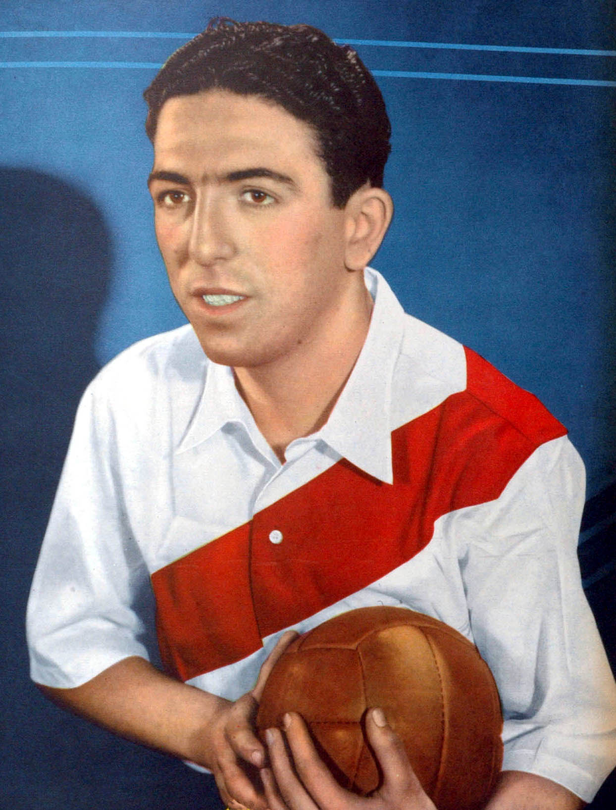
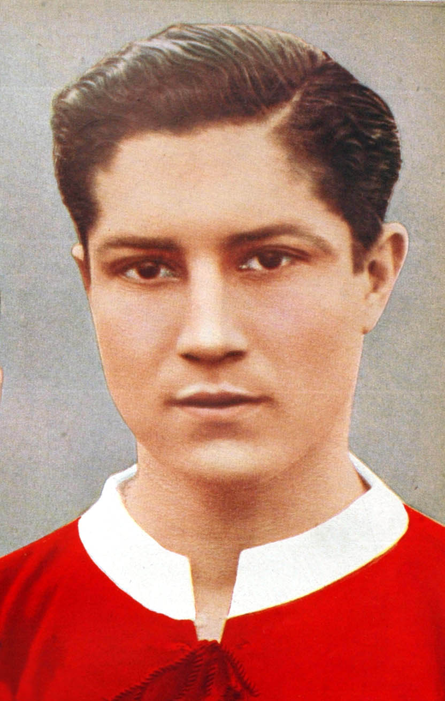

Fulbo
Equipos de futbol argentino
Estos son algunos de los goleadores de cada equipo profesional
Ferro Carril Oeste
El máximo goleador histórico de Ferro Carril Oeste es Carlos Alberto "Goma" Vidal, quien anotó 108 goles con la camiseta verdolaga

Boca juniors
El máximo goleador en la historia del Club Atlético Boca Juniors es Martín Palermo, quien anotó 236 goles en 404 partidos oficiales.

River Plate
El máximo goleador en la historia de River Plate es Ángel Labruna con 317 goles.

Racing
El máximo goleador en la historia de Racing Club es Alberto Ohaco, quien convirtió más de 200 goles durante la época amateur del club

Independiente
El máximo goleador en la historia del Club Atlético Independiente es el paraguayo Arsenio Erico, quien anotó 295 goles en torneos oficiales de liga (y más de 300 sumando todas las competencias)

Contacto
Ubicacion: Caballito CABA
Redes Sociales: @fulboestadisticas